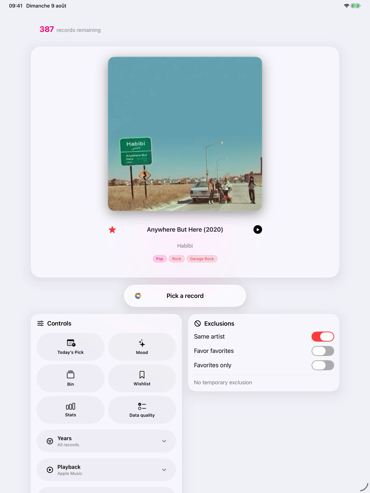

Record Picker łączy targi, Mood Pick, wzbogacone katalogowanie, iCloud, eksport, zarządzanie duplikatami, 32 języków i natywne aplikacje na iPhone'a, iPada, Apple Watch i Mac.
Dobrze utrzymana kolekcja
Buduj czystą, sprawdzalną i przyjemną kolekcję, nawet gdy publiczne bazy danych nie wystarczą.
Skanowanie kodu kreskowego korzysta z Discogs jako rezerwy, gdy MusicBrainz nie zna odniesienia, i automatycznie wypełnia formularz po znalezieniu wydania.
Metadane z MusicBrainz i Discogs
Lista życzeń oddzielona od skrzynki
Wykrywanie duplikatów i kontrole jakości danych
Okładki i dane wizualne
Utrzymuj kolekcję przyjemną do przeglądania dzięki okładkom pobranym lub wybranym samodzielnie.
Wyszukiwanie okładek przez Cover Art Archive · iTunes Search · Deezer
Ręczny import ze Zdjęć lub Plików
Wyszukiwanie w internecie, gdy brakuje okładki
Przywróć oryginalną okładkę
Edycja okładek i danych wizualnych
Losowanie na iPhonie poziomo
Losowanie na iPhonie poziomo
Metadane z MusicBrainz i Discogs
Statystyki

Konfigurowalny wybór losowy
Wybierz następną płytę bez utraty kontroli, z losowością, która porusza kolekcję.
Ważone losowanie preferujące rzadziej słuchane płyty
Filtry według roku, gatunku, formatu, prędkości i ulubionych
Tymczasowe wykluczenia bez usuwania
Przeglądana historia pokazująca, co często wraca
Nastroje i odtwarzanie
Wybieraj według nastroju i zachowuj ślad odsłuchów, aby kolekcja odsłaniała się z czasem.
Wybór według nastroju z lokalnymi modelami Apple, gdy są dostępne
Lokalne dopasowanie na podstawie metadanych, gdy modele nie są dostępne
Opisowe statystyki z Apple Intelligence na urządzeniu, gdy jest dostępne
Ostatnia historia wylosowanych lub odtwarzanych płyt
Opcje odtwarzania
Apple Watch zaprojektowany od nowa
Okładka staje się rozmytym tłem, a przyciski ulubione, cofnij ostatnie losowanie i następne losowanie mają własne reakcje haptyczne.
Układ dostosowany od 41 mm do Ultra
Drobne poprawki: lepiej wyważony wybór okładki na iPadzie, szybsza synchronizacja iPhone-Watch i dyskretna prośba o ocenę.
Przeglądanie i wgląd w kolekcję
Przeglądaj, sprawdzaj i rozumiej kolekcję bez wychodzenia z aplikacji, z osobnymi interfejsami iPhone i iPad.
Szybka nawigacja po skrzynce
Lista życzeń oddzielona od skrzynki
Spójne przyciski Liquid Glass
Czytelne wiersze iPada i bezpośredni dostęp do szczegółów z okładek
Przeciągnij i upuść na iPadzie tam, gdzie naprawdę pomaga
Wykrywanie duplikatów i kontrole jakości danych
Metadane z MusicBrainz i Discogs
Przeglądana historia pokazująca, co często wraca
Synchronizacja iCloud bez kombinowania
Bez zewnętrznych dostawców AI i bez AI w chmurze; Apple Intelligence zostaje na urządzeniu
Skrzynka, lista życzeń, rozwiązane duplikaty, wykluczenia, historia, przywracalne usunięcia i własne okładki przechodzą między urządzeniami.
Edycja okładek i danych wizualnych
CSV do arkuszy i czysty JSON, osobno dla skrzynki i listy życzeń
Pełna kopia zapasowa na żądanie
Recenzje internetowe nigdy nie są pobierane automatycznie
32 języków
Record Picker jest dostępny w 32 językach, z nowymi wariantami i lokalizacjami: arabskim, katalońskim, koreańskim, duńskim, angielskim dla Australii/Kanady/Wielkiej Brytanii, fińskim, kanadyjskim francuskim, hebrajskim, hindi, indonezyjskim, norweskim, polskim, portugalskim, rosyjskim, szwedzkim i tureckim.
Arabski, hebrajski, hindi, japoński, koreański, chiński uproszczony i tradycyjny
Wersje
v2.0
Record Picker 2.0 to nasza największa dotąd aktualizacja: nowe doświadczenie oparte na trzech sposobach wyboru muzyki — Płyta dnia, Mood Pick i Random Pick.
iPhone · iPad · Mac · Apple Watch · Już dostępna
Płyta dnia łączy zweryfikowane wiadomości muzyczne, rocznice, wznowienia i opcjonalne pobliskie koncerty z płytami, które masz lub chcesz mieć. Każda sugestia wyjaśnia powód i podaje źródło.
Przeglądaj kilka aktualnych propozycji w przód i wstecz oraz ulepszaj prywatny ranking ocenami Trafne i Nietrafne.
Nowy Graf kolekcji łączy dzieła, nagrania, wykonawców i powiązane wydania — szczególnie przydatne w kolekcjach klasycznych.
Czytelniejsze wprowadzenie, nowy ekran główny Maca i bardziej zwarta nawigacja iPhone’a ułatwiają odkrywanie głównych funkcji.
Ulepszono dopasowanie MusicBrainz, jakość danych, tłumaczenia i wydajność.
Kolekcja i lista życzeń pozostają prywatne: dopasowanie i personalizacja odbywają się na urządzeniu.
v1.9
Record Picker 1.9 wprowadza Wybór dnia: aktualny i prywatny powód, aby na nowo odkryć płytę, którą już masz.
Zweryfikowane wiadomości muzyczne, ważne rocznice i opcjonalne koncerty w pobliżu są dopasowywane do kolekcji wyłącznie na urządzeniu.
Każda propozycja wyjaśnia wybór i podaje datowane źródło. Wiadomości z listy życzeń pozostają oddzielone od płyt, których możesz słuchać.
Opcjonalne prywatne przypomnienia, ocena trafności i Wybór dnia na Apple Watch pomagają utrzymać użyteczność propozycji. Kolekcja nigdy nie jest wysyłana do serwisu wiadomości.
Record Picker ≤ 1.8
v1.8
Record Picker 1.8 łączy iPhone'a, iPada, Apple Watch i Maca pod jednym numerem wersji.
Więcej fizycznych formatów: winyl, CD, SACD, hybrydowy SACD, MiniDisc, kaseta, DVD-Audio, Blu-ray Audio i płyty 78 obr./min.
Osobne pola klasyczne dla dzieł, numerów katalogowych, dyrygentów, orkiestr, zespołów, solistów oraz dat i miejsc nagrania.
Czytelniejszy import i eksport CSV z neutralnym polem Media Format; starsze pliki Record Picker pozostają zgodne.
Większa niezawodność kopii zapasowych, ulubionych, okładek, importu i napraw metadanych.
Oddziela pewne poprawki, które aplikacja może wykonać sama, od wyborów wymagających Twojej decyzji, pokazując źródło i poziom zaufania każdej propozycji.
Porównuje obok siebie rozbieżności MusicBrainz i Discogs. Kolejkę napraw można wznowić, wyeksportować do CSV i cofnąć jej zmiany.
Nowy czteroetapowy przewodnik przedstawia import, jakość danych, Random Pick, Mood Pick oraz Free/Pro.
Karty albumów pokazują najpierw rok pierwszego wydania, zachowując dokładny rok posiadanego wydania.
v1.6
Record Picker jest darmowy, z dożywotnią wersją Pro i natywną aplikacją na Maca
Record Picker jest teraz bezpłatny dla kolekcji zawierających do 100 rekordów; jednorazowy zakup Pro odblokowuje nieograniczoną kolekcję na iPhonie, iPadzie i komputerze Mac, bez subskrypcji.
Nowa natywna aplikacja na komputery Mac zamienia duży ekran w centrum dowodzenia umożliwiające przeglądanie, wzbogacanie, porządkowanie i ponowne odkrywanie kolekcji.
Synchronizacja iCloud jest bardziej responsywna, a jej status jest teraz widoczny w dedykowanym Centrum synchronizacji.
Import CSV chroni teraz istniejące ulubione; możesz także przywrócić ulubione tylko z wcześniejszej kopii zapasowej, bez zastępowania bieżącej kolekcji.
Wykrywanie duplikatów jest znacznie szybsze, wybór recenzji jest lepszy, a ponowne indeksowanie słów kluczowych opinii wykazuje teraz wyraźny postęp.
Wyczyść raporty diagnostyczne dotyczące problemów z pamięcią masową, zamiast sprawiać, że błąd będzie wyglądał jak utrata danych.
v1.5
Lepsza synchronizacja, grafika i jakość danych
Bardziej niezawodna synchronizacja iCloud na iPhonie, iPadzie i Apple Watch.
Grafika jest teraz dodawana automatycznie po ręcznym wprowadzeniu lub wprowadzeniu kodu kreskowego, z bardziej niezawodnymi rozwiązaniami awaryjnymi.
Ulepszone narzędzia do kontroli jakości danych, zarządzanie duplikatami i pobieranie krytycznych recenzji.
v1.4
Odkryj kolekcję muzyki na nowo dzięki sprawiedliwym losowaniom, Apple Watch od nowa, czytelnej skrzynce, 32 językom i narzędziom importu/eksportu.
Losowanie na iPhonie poziomo
Przeglądana historia pokazująca, co często wraca
Lista życzeń oddzielona od skrzynki
Statystyki
Drobne poprawki: lepiej wyważony wybór okładki na iPadzie, szybsza synchronizacja iPhone-Watch i dyskretna prośba o ocenę.
v1.3
Apple Watch od nowa, zapasowe Discogs i 32 języków
Okładka staje się rozmytym tłem, a przyciski ulubione, cofnij ostatnie losowanie i następne losowanie mają własne reakcje haptyczne.
Układ dostosowany od 41 mm do Ultra
Skanowanie kodu kreskowego korzysta z Discogs jako rezerwy, gdy MusicBrainz nie zna odniesienia, i automatycznie wypełnia formularz po znalezieniu wydania.
Record Picker jest dostępny w 32 językach, z nowymi wariantami i lokalizacjami: arabskim, katalońskim, koreańskim, duńskim, angielskim dla Australii/Kanady/Wielkiej Brytanii, fińskim, kanadyjskim francuskim, hebrajskim, hindi, indonezyjskim, norweskim, polskim, portugalskim, rosyjskim, szwedzkim i tureckim.
Drobne poprawki: lepiej wyważony wybór okładki na iPadzie, szybsza synchronizacja iPhone-Watch i dyskretna prośba o ocenę.
v1.2
Katalog, inteligentny wybór i Apple Watch
Pełny katalog muzyczny do importu, ręcznego dodawania albumów i skanowania kodów.
Animowane losowanie, filtry lat, ulubione, tymczasowe wykluczenia, historia odsłuchów i statystyki.
Wybór według nastroju z lokalnymi modelami Apple, a gdy ich brak, dopasowanie lokalne z metadanych.
MusicBrainz, Cover Art Archive lub ręczne okładki, kopia/przywracanie, Skróty Siri i Apple Watch.
Kolekcja pozostaje lokalna; wyszukiwania metadanych i okładek odbywają się tylko po uruchomieniu przez użytkownika.
v1.1.1
Ulepszenia w App Store
Dopracowano interfejs i fundamenty wewnętrzne dla płynniejszego działania.
Ulepszona obsługa iPada.
Wybór według nastroju z lepszym wykorzystaniem recenzji.
Jakość danych: karty płyt, ręczne usuwanie wierszy i wyszukiwania Discogs/MusicBrainz.
Brakujące utwory: wyszukiwanie MusicBrainz, potem Discogs.